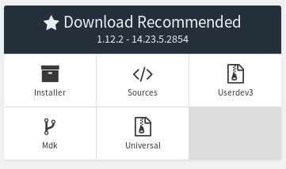
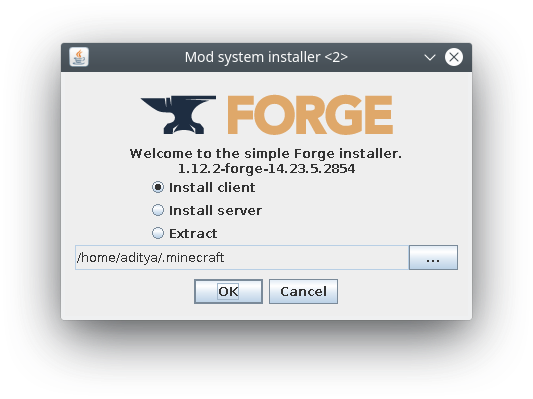
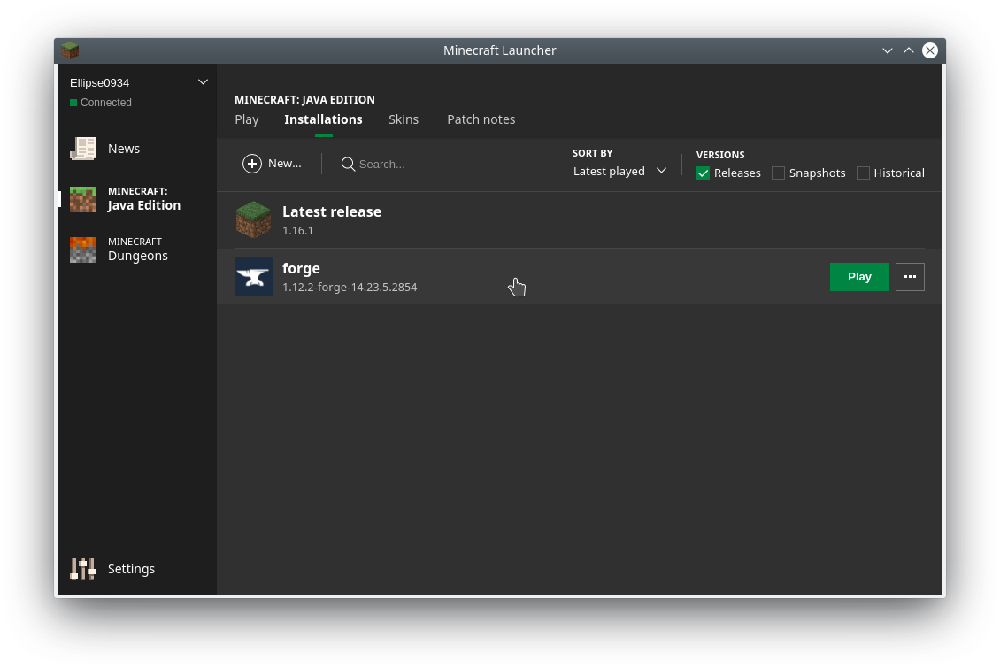

Installation
Minecraft: Pi
Minecraft: Pi is free and comes pre-installed on all Rasbian since September 2014. Launch it by navigating to Menu > Games or typing minecraft-pi in the terminal. However, if you are running an older version of Raspbian get the game here. Refer to the same link if you are unable to launch it.
Note that Minecraft: Pi is limited compared to the Java version. If you have a powerful computer and access to a Minecraft: Java license then you should consider using that platform for a better experience.
Minecraft: Java
Minecraft: Java can be purchased and downloaded here. Follow the installation instructions provided there. The Java edition works on Windows, Linux and MacOS. However, we will need either RaspberryJamMod or RaspberryJuice to run PiCraft.
RaspberryJamMod
This is a forge mod. The package is hosted here. The last version of RaspberryJamMod is for forge 1.12 so we will need that first. Download link.

Download the installer. The installer requires Java so incase your computer does not recognise it download the latest version of Java here. On windows you can directly run the installer, on linux/mac if you can't
On linux/macOS the installer will be named something like forge-1.12.2-14.23.4.2749-installer.jar
To run the installer open the Terminal from Applications and head over to the directory where the installer is present. Then run it by doing the follows:
cd Downloads
java -jar forge-1.12.2-14.23.4.2854-installer.jar
Click Install client then click OK. Upon completion Forge should be installed.
Now we need to install the mod. For this download the mods.zip file from the RaspberryJamMod github page. The mods.zip folder consists of many folders, open the folder 1.12.2 and it should contain a single file named RaspberryJamMod.jar.
To install the mod we need to extract it to the mods folder in the minecraft directory. The location for the the .minecraft directory for each OS is given below.
| OS | Location |
|---|---|
| Windows | %APPDATA%.minecraft |
| macOS | ~/Library/Application Support/minecraft |
| Linux | ~/.minecraft |
Now head over to this location and create a folder named mods if it does not exist. Copy the extracted folder 1.12.2. The mod is now installed.
Next time you launch Minecraft select forge 1.12.2 when starting. This can be done by going to the installations tab and selecting Forge 1.12.2.

RaspberryJuice
This is a Bukkit plugin. If you wish to operate a server with many clients then this is probably the best way to go. You will need to first setup CraftBukkit and then install the plugin. Refer to the Bukkit Forums and Docs for instructions and help.
There is also an easy option and that is to grab the Adventures in Minecraft starter kit for your OS and then run it. Grab the Kit here. Adventures in Minecraft is a book aimed at kids to teach them programming(python) using the Minecraft: Pi API. This starter pack is provided by them and is an extremely easy way to setup the environment we need.
Install Julia
Get the latest stable release of Julia here.
For the Raspberry Pi download the Generic Linux Binaries for ARM. We need to extract the tar.gz file then create a symbolic link to julia.
cd ~/Downloads
tar -xvf julia-1.0.0-linux-armv7l.tzr.gz
sudo ln -s ~/julia-1.0.0/bin/julia /usr/bin/julia
juliaThis should launch julia. Whenever you need to open julia open the terminal and enter julia.
This should install a REPL shell. REPL stands for Read-Eval-Print-Loop. This is an interactive shell in which you can run your code(Like Python's IDLE). While, it is possible to do everything in this shell there are other options to choose from as an IDE(Integrated Development Environment).
Most popular options are Jupyter Notebooks and Juno.
Juno is built on Atom and adds Julia-specific enhancements, such as syntax highlighting, a plot pane, integration with Julia's debugger (Gallium) , a console for running code, and much more. You can read more about it and get appropriate installation instructions here.
Juno(and Atom) is a bit resource hungry compared to other editors hence is not recommended for systems with low specs like the Raspberry Pi. It is recommended that you use the REPL shell or Jupyter notebook for slower machines.
Jupyter notebook is a web application in which you can run julia code. You need the IJulia package to run Julia from this notebook. Get IJulia here. One benefit of using a Jupyter notebook is that you can run Minecraft in full screen on one computer and use another computer/tablet's browser to write and execute code for convenience.